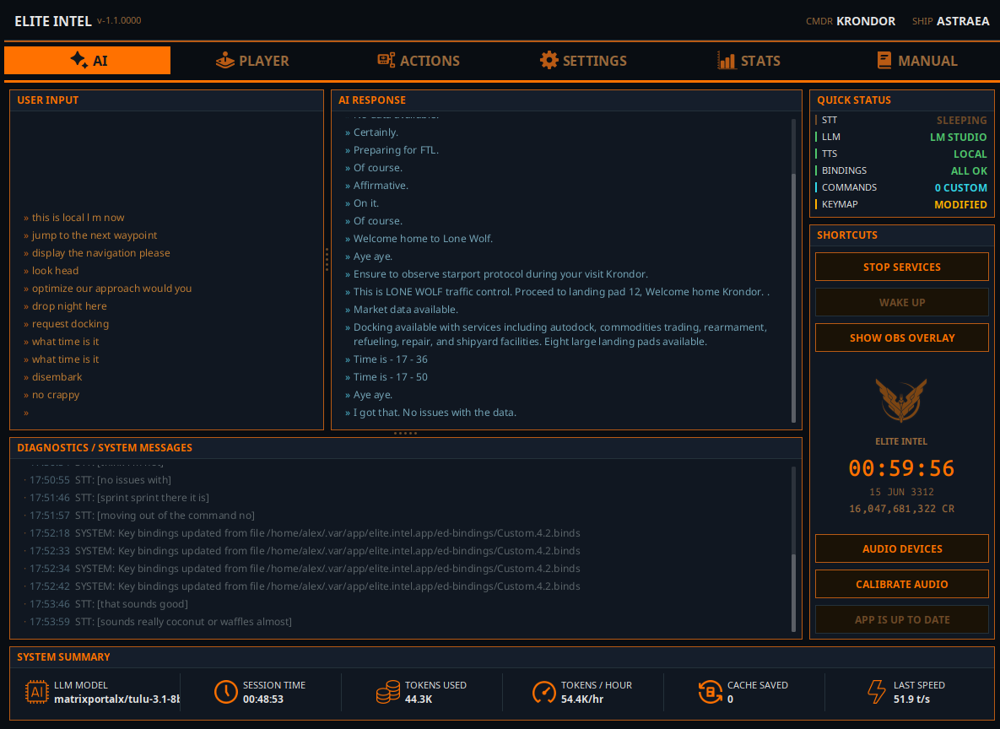

Elite Intel
AI Voice Assistant for Elite Dangerous

The released version is V1.0 is different from what you see on screenshots.
If you want version V1.1 shown above 👉Join the Beta Test Team here V1.1👈
Speak Naturally. Fly Better.
Elite Intel connects your voice to your ship. No command lists to memorize, no rigid syntax to learn. Just say what you mean, and the AI handles the rest. Whether you are managing ship systems, plotting a route, or scanning a system for signals, Elite Intel understands your intent and acts on it.
Data is sourced in real time from Spansh and EDSM.
Supported languages: English, Spanish, French, Ukrainian, German, Russian
Intelligence, Not Just Automation
Elite Intel does more than press keys on your behalf. The language model applies domain knowledge to give you meaningful analysis. Ask it to evaluate your current loadout and it will break down strengths, weaknesses, and trade-offs - not recite a spec sheet.
Session data from auto-scans and FSS results feeds directly into queries like "What is on the scanners?" or "Analyze local signals." The AI works with what the game exposes. Where data is unavailable - because it exists only on a panel and not in the journal - it will say so.
Your Ship. Your Hardware. Your Rules.
Elite Intel runs entirely on your machine. The full pipeline (speech recognition, language model, and voice synthesis) operates offline. No cloud account, no subscription, no data leaving your system.
Prefer a hybrid setup? Mix and match freely: local speech recognition with a cloud language model, or cloud voice synthesis with local inference. The choice is yours.
Speech Recognition That Actually Works
Elite Intel uses the NVIDIA Parakeet transducer model for speech-to-text - the same class of technology used in professional transcription tools. It runs on both Windows and Linux with no additional setup or training required.
If you have used voice recognition software with Elite Dangerous before, expect a noticeable difference in accuracy.
A Voice That Fits the Cockpit
Kokoro TTS is built in and works out of the box. No downloads, no API keys, no configuration. It provides 53 voices across English, Spanish, and French, and supports the full personality system.
For all other supported languages, Google TTS delivers natural-sounding speech in every language Elite Intel supports. An API key is required and can be configured under Settings / Cloud Services.
Choose Your LLM
Elite Intel works with the language model that suits your setup:
Free and offline - LM Studio or Ollama running a local model
Free cloud - Mistral
Paid cloud - Anthropic, OpenAI, xAI, Gemini, DeepSeek
Switch providers at any time in settings. No reinstallation required.
Community
Elite Intel is open source. Bug reports, feature requests, and pull requests are welcome.
Join the community on Matrix: 👉 #krondor:matrix.org 👈
Maintain manual control of critical ship systems at all times.